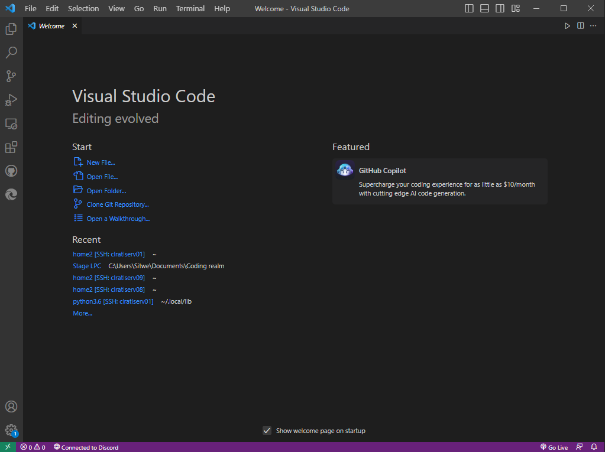
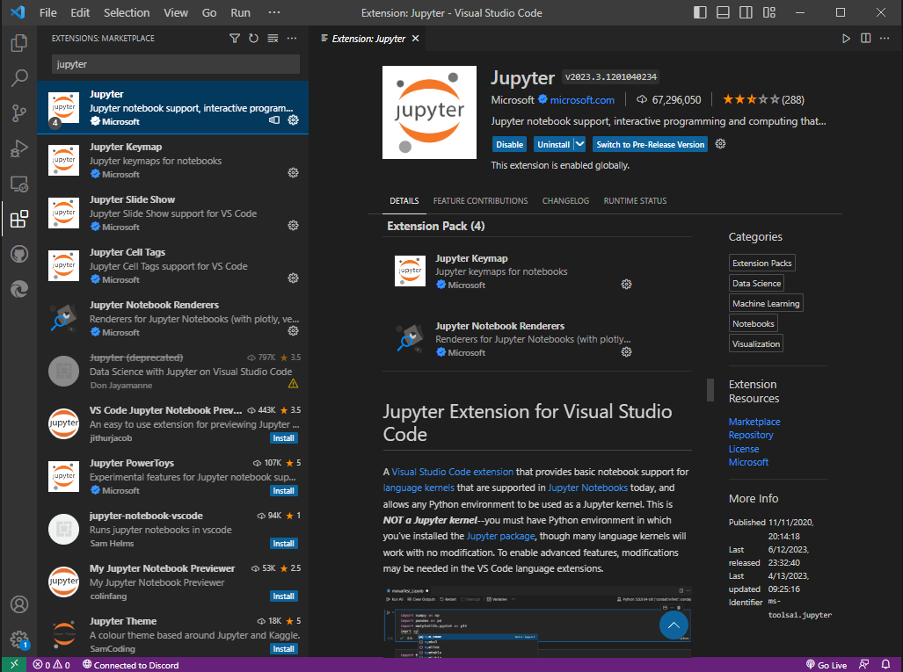
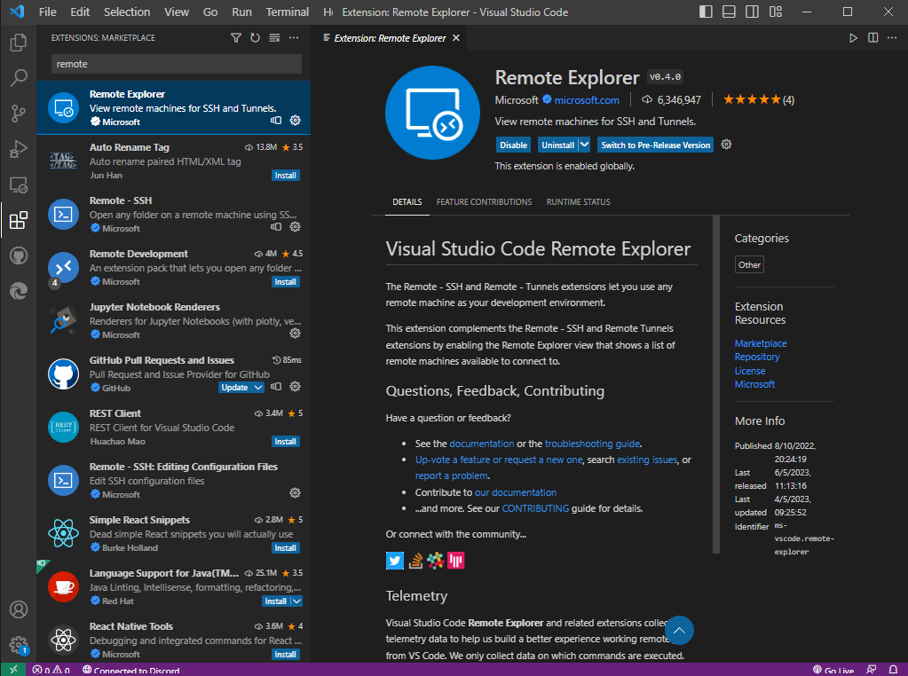
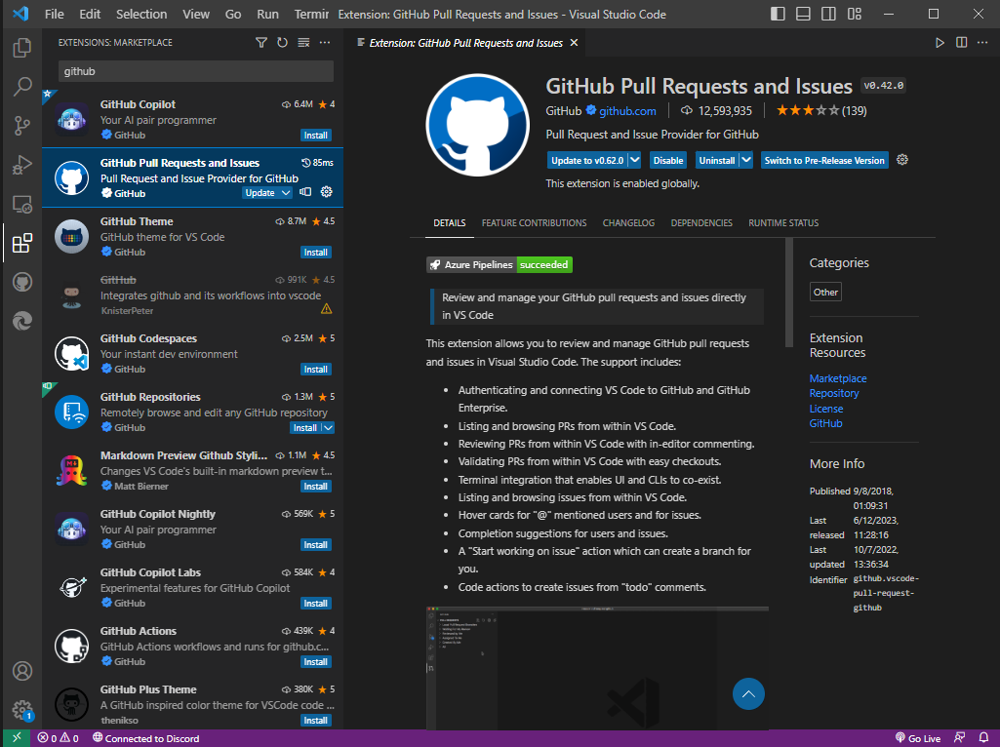

Visual Studio Code and SSH @LPC
Visual Studio Code
VS code is Microsoft's open source multipurpous IDE, can support all language and all platforms, with multiple extensions made by the community that improve the quality of life of VS code users and spreading its range of applications.

Typical VS code home page, when first run with less extensions on the side bar.
VS code is capable of everything literaly, we can split the owrking space to N windows, each one with a file or a directory. We can open multiple terminals with different ssh connections, or processes. We can open websites with an embeded server, we can read PDF files, make schematics using drawio extension... the possibilities are illimited.
VS CODE Extensions
Python or any other environnement or additions made by the community can be found as an extension within the extensions marketplace button on the sidebar (all extensions are free)
Python/Jupyter extensions
Python evironnement
To setup python on the environnement we have to install the Python extension chosing the Python version needed, VS code will detect if this version is already on the machine and will just link it self, if no python version is detected a fresh installation will be done.

We can later disactivate, or switch between versions or update the distribution on the marketplace with the dedicated buttons.
Jupyter extension
Jupyter Notebook is a powerful and versatile web-based interactive computing environment that enables users to create and share documents containing live code, equations, visualizations, and explanatory text. It provides a convenient platform for data analysis, scientific research, and machine learning tasks.

To setup Jupter Notebooks on the Visual Code, the extension is available : Extension link
SSH remote extensions
The Remote - SSH extension lets you use any remote machine with a SSH server as your development environment. This can greatly simplify development and troubleshooting in a wide variety of situations.

Github/Gitlab extensions
Github extension is very important to keep your working branch up to date, and commit changes to the reposity. The extension automates multiple aspects of the git process by detecting changes and highlighting them, and help keep track of the changes done.

SSH remote
To connect into the LPC an SSH and a tunnel connection is needed, the different solutions availabale (Terminal/X2GO) each one have its own inconveniences. Terminal lack of visual gui and closing one terminal can close multiple runned tasks, and X2GO (for my applicaiton was too slow, with frame drops and alot of lag issues. The most important one is the impossibility to copy past across the machines even with the option activated.)
A solution using SSH remote extension was found and the following tutorial explains how to use it.
Prerequisite
One important prerequise is to have an SSH key and trusted by the LPC IT to connect to the proxy server clrssh.in2p3.fr. Or any proxy server if utilized for other servers than the ATL@LPC servers.
Adding a remote connection
After installing SSH remote extension a new icon on the side bar should appear, from there we can clic on the plus bottom to add a new SSH remote connection.

It will ask you about the SSH connection link in a small popup on the top. You can either put your real SSH conenction credentials or a temporary innexistant SSH connection credentials because we will change it eventually for ATL@LPC servers since it needs a proxy jump to configure the hosts. in this tutorial i introduced test@test.com.

and then it will ask for the .ssh directory where your ssh keys are located.

You can chose the correct path to the .ssh directory.
After this we can access the config file of the ssh hosts using a right clic on the extension SSH dropdown menu,

We can here change the host config to be compatible with the proxy jump over clrssh.in2p3.fr.
We can multiple Hosts, and multiple port forwarding to any port wanted depending on our applications (SSH remote can forward ports if needed).

Host should be formated like this :
Host serverName
HostName serverName
LocalForward port localhost:port
ProxyJump usr@clrssh.in2p3.fr
User usr
Save the file to apply the changes.
Connection to a remote
Using the arrow to the Host we want to connect to, we can connect to it and pop ups will ask for ssh public key, and ATL@LPC user password (no password is saved, and will be asked on each connection)

SSH Key :

ATL@LPC key :

After connection we can verify the connection status on the bottom bar corner green status indicator. And we are asked to open a working place,

We can navigate the server folders to chose our working directory

Visual code will ask up again to introduce our credentials for security reasons, and voila, we can use our personal computer with the server's computation power.
Important : You'll have to install your usual extensions back/again on the server side after remote connection, the Visual Code isntance on the ATL@LPC is not a copy of your local ATL@LPC.